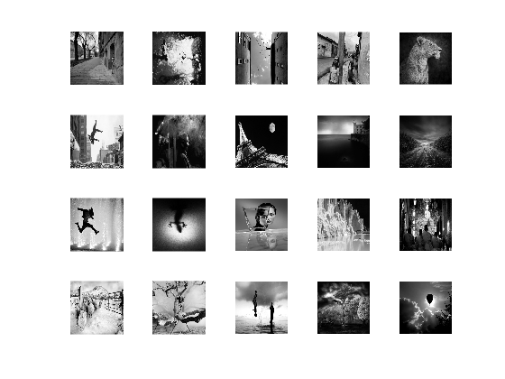
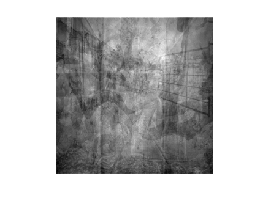
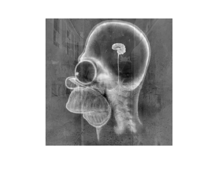

Problem 2
Contents
Problem statement
clear; close all; % Load in the matrices needed for this problem load('prob2.mat'); % There are two matrices, one containing 20 % basis images, and one containing the image % x that we are trying to decode. % Display the 20 basis images in matrix A figure(1),clf; for kk = 1:20 subplot(4,5,kk); imshow(A(:,:,kk),[]); end % And display the image x figure(2),clf; imshow(x,[]); 
Solution
num = 256*256; f = reshape(x,num,1); p = reshape(A,num,20); e = zeros(num,20); q = zeros(num,20); for i = 1:20 e(:,i) = p(:,i); for j = 1:i-1 e(:,i) = e(:,i) - dot(p(:,i),q(:,j))*q(:,j); end q(:,i) = e(:,i)/dot(e(:,i),e(:,i)); end x_var = q\f; f_est = q*x_var; err = f-f_est; test = reshape(err,256,256); figure(3),clf; imshow(test,[]);
Discussion
You'll notice that the quality of the recovered image is quite low. When added to the original linear combination image, the image quality was quite high. Describe what accounts for the loss in image fidelity of your recovered image.
% span of the basis formed by A doesn't include all of the recovered image, % but parts of it. The error is only the part of the recovered image that % the basis could not span. This shows a degredation in the image.